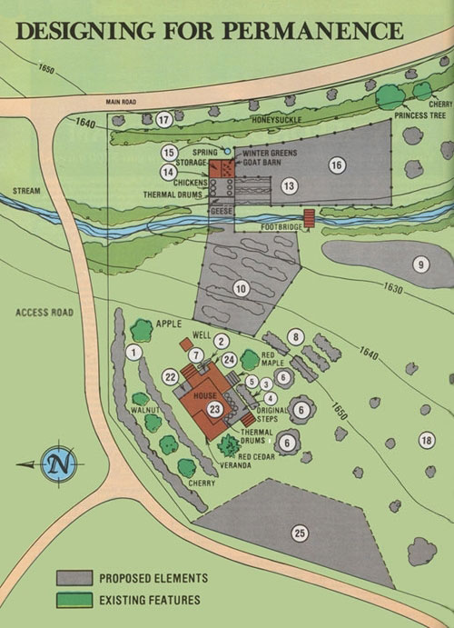

[1] Windbreak and privacy plantings (mixed double rows of hemlock or white pine and hybrid poplar, third row of shrubs - autumn olive, blueberry, or flowering quince - to close off gaps near ground): protection from road and from northwesterly winter winds.
[2] Climbing vine (wild clematis, hardy kiwi): northeast wind protection.
[3] Herb and salad garden in protected spot near house.
[4] Solar addition (glass-enclosed porch): additional living space, winter heating, firewood storage, and vegetable production (vented in summer).
[5] New steps: easy access to garden.
[6] Tap-rooted deciduous shade trees (hickory): summer shade and winter sun for sunspace.
[7] Worm bed/rabbit hutch combination: meat and high-quality compost (near house for easy disposal of kitchen scraps, near garden for convenient application of compost).
[8] Salad and flower garden.
[9] Main crop garden on fertile bottomland, irrigated from creek, spring, or house.
[10] Berry patch and goose range (solar-powered electric fence): strawberries, raspberries, blueberries, wineberries in rows along contour, grassy weeds controlled by geese.
[13] Chicken range/garden (hedged with Siberian pea shrub, bordered with comfrey - in protective cages - for chicken forage): two runs used alternately for poultry and produce (garden enriched by discarded goat and fowl bedding).
[14] Barn: housing for 3 goats, 20 chickens, 6 geese plus greenhouse for growing green winter feed (thermal water wall used for summer irrigation).
[15] Spring: water for livestock and irrigation.
[16] Goat range (solar-powered electric fence)
[17] Privacy planting along roadway (original honeysuckle and multiflora rose plus newly planted hybrid poplar and bamboo): wildlife habitat and erosion control.
[18] Dwarf fruit tree orchard along contour, additional pasture for expanded goose flock.
[22] Winter airlock entry: reduce heat loss from house.
[23] Upgraded insulation in house (weatherstripping, caulking, thermal curtains.)
[24] Gutters added to house: rainwater stored in cistern for irrigation use.
[25] Grassy parking area.
Close This Window
|
 |
|
|